也紀念我們永遠的朋友 李士傑先生（Shih-Chieh Ilya Li）。
OmegaT — 開放源碼電腦翻譯輔助程式（CAT Tool）
前言：
在專業翻譯的領域，CAT Tools 是不可或缺的翻譯輔助工具。CAT 所代表的意思是 Computer Assisted Translation，也就是指「電腦輔助翻譯工具」，此種工具透過讀取翻譯記憶檔（Translation Memory, TM）和詞彙表（Glossaries），可以在翻譯人員遇到相同句型和詞語時，提供之前的譯作以供參考、比對，讓翻譯人員依循一致性的原則選擇較適當的翻譯。CAT Tools 可以節省翻譯時間，並確保同一文件不同版本間的翻譯一致性。
在一般商業公司中，使用的最多的 CAT Tools 是 SDL Trados，Trados 由於它與 Microsoft Word 的完美結合與易用性而在 Windows 平台上廣泛使用。不過在開放源碼界中，也存在著不輸給 Trados 的 CAT Tool，例如：用 JAVA 寫成的 OmegaT 和 Open language Tools，與使用 Python 的 Transolution 等，由於開放源碼的 CAT Tool 大多數以跨平台語言寫成，因此擁有 Trados 所不具備的跨平台能力，使得在各種平台上的使用者都能自由地使用這些 CAT Tool。
上述的 CAT Tool 大多擁有獨立的 TM 檔和參考檔，因此在發派翻譯工作時，必須將舊有的 TM 檔和 Reference 檔案，隨著翻譯文件一起寄送。相對於這種獨立式的 CAT Tool，另外也有集中式的 CAT Tool，例如 Lingotek 就是一個很好的例子，Lingotek 是個 CAT Web Application，發派翻譯的使用者可以將 TM 檔和 Reference 檔集中在 Lingotek 的 Server 上管理，而翻譯者也可以直接在 Lingotek 的 Web Application 介面中直接翻譯文件。
除了特殊用途的 CAT Tool 外（如專門翻譯 gettext po 文件的 Poedit），大多數的 CAT Tools 都可以翻譯多種來源文件，在開放源碼翻譯的常見文件格式有：HTML、XHTML、RTF、ODF 和純文字檔等，除此之外在 Windows 平台中，doc 文件也是翻譯來源文件的大宗，而在 Office Open XML 推出後，也有不少 CAT Tools 開始支援這個 Microsoft 公司推出的開放格式。
TM 檔的功能和益處
TM 檔的功能是將翻譯分段儲存，以在日後遇到相同的句子時可以再次回收使用。CAT Tools 會先解析原文，並將其分段儲存於 TM 檔中，這個過程稱為 Segmantation, Segmentation 的分段基準通常以句為單位，也就是說 CAT Tools 會先分析原文的標點符號使用狀況，並以句尾標點來分段。這種作法在遇到縮寫字時有時會有問題，因為有些翻譯系統會將縮寫點誤判為句點，因此大多數的 CAT Tools 都可以讓你調整 Segmantation 的例外條件，以處理此種問題。
如果是全新無內容的 TM 檔，CAT Tools 會在分段後，讓譯者直接輸入一句句輸入翻譯，由於 CAT Tools 都是分段處理翻譯，因此必須注意上下文承接的問題，否則有時會產生上下文不連貫的問題，但此種分段的方式也有其好處，因為 CAT Tools 讓譯者逐句翻譯，因此可大幅減少漏譯的問題。如果是舊版翻譯更新，則 CAT Tools 會去讀取 TM 檔中是否有目前翻譯文句的對應翻譯，有些 CAT Tools 只會顯示 100% Match 的文句，讓使用者可以直接套用，而大多數 CAT Tools 都有模糊對應（Fuzzy Match）的功能，可以抓出 TM 檔中部分相符的文句，讓使用者修改翻譯，以套用在新譯文中。更有些 CAT Tools 能夠設定模糊對應的百分比，只有對應較高的文句會顯示，一般來說，75% Match 以上的句子才建議使用修改後套用的方式，符合度在 75% 以下的句子則建議重新翻譯，不過仍需依情況判斷。
使用 TM 檔另一個重要的原因是如已有前譯，則建議使用相同風格的文字，而 TM 檔剛好可以提供前譯的文字和術語供後來的譯者參考，這在大型翻譯計畫中尤其重要，因為譯者翻譯的可能僅是一部分需修改的文件，此時就必須注意目前的翻譯和其他舊有文件的一致性，這也是大型翻譯計畫常會使用單一 TM 檔的原因。TM 檔可以節省譯者翻譯重覆文句的時間，並提供翻譯一致性的參考文字，除此之外，它還能夠保留原有檔案的特殊格式，例如 HTML 檔中的 HTML 標籤等。另外，TM 檔的使用也能節省大型翻譯專案的開銷，因為已翻譯過的 100% 符合的文字並不需再重新翻譯，可以在發出專案前先行套用，僅計算實際的翻譯字數。
使用 TM 檔在翻譯專案一開始時並不明顯，但隨著翻譯計畫的擴大，TM 檔對於維持一致性會愈形重要。
詞彙表（Glossary）的功能
由於 TM 檔大多數是以句做為翻譯單位，因此對於單詞和術語雖然可以提供參考，但遇到特殊翻譯要求時，無法精確規範該使用的翻譯詞彙，此時發譯者可以提供詞彙表要求譯者遇到特殊詞彙時，強制使用指定的翻譯。通常 CAT Tools 會有一個 Glossary 欄位顯示提定的詞彙，這對譯者來說是絕對必須遵循的翻譯。詞彙表通常以 CAT Tools 可以讀取的純文字為主。如 CAT Tools 無提供 Glossary 功能時，也可以使用 Excel 表格指定術語翻譯詞彙，此時譯者必需勤於手動查詢 Glossary 表格，以期達到發譯者的要求。
總而言之，TM 檔的功能是提供讀者作為參考，並非絕對的標準，但遇到一個詞彙具有數種正確的翻譯時（例如： Regular expression），則以一致性為最高原則，依循前譯的翻譯用詞（加這一句是因為自由軟體使用者、推動者和開發者似乎都有著難以說服的牛脾氣，因此以先來後來為準）；而詞彙表則是必須達到的翻譯要求，除非錯誤，是不容質疑的。
CAT Tools 的工作流程
基本上，CAT Tools 的工作流程大多遵循以下工作流程：
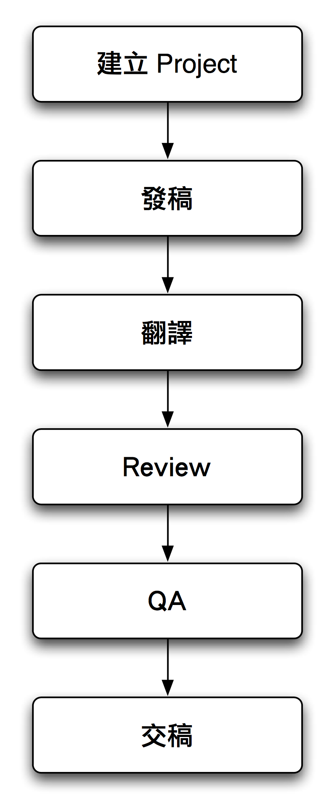

以下我們將使用開放源碼的 CAT Tool OmegaT 解說 CAT Tool 的工作流程和基本使用方式。
建立 Project 和發稿
首先，發稿人必須將所有需翻譯的文件包成一整個 Project，以便於發出去翻譯。如果是舊版稿件更新的話，也必須匯入舊版翻譯的 TM 檔和詞彙表，以提供翻譯者上個翻譯版本和指定的翻譯詞彙作為參考。
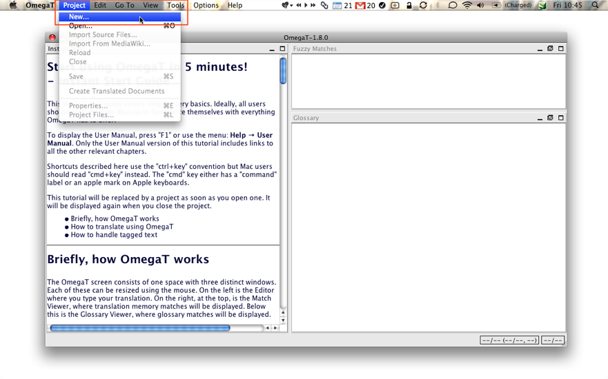
首先選擇【Project】->【New】開啟一個新的翻譯計畫。
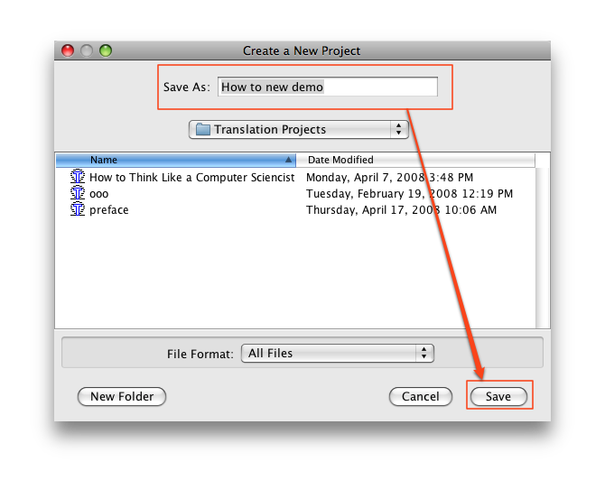
然後在「Save AS」欄位中輸入翻譯計畫的名稱。
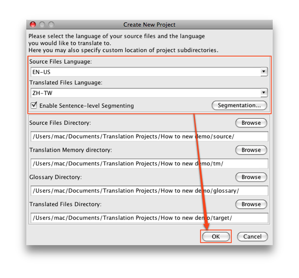
接著必須選擇原文和譯文所使用的語言，請在「Source Files Language」指定原文語言，而在「Translated Files Language」選擇翻譯語言。而底部的四個欄位則可以指定原文、譯文、TM 檔和詞彙表的存放目錄。
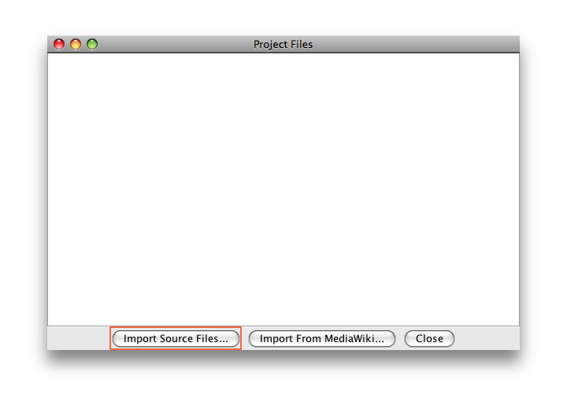
然後我們要匯入該計畫中的所有待翻譯文件，按一下〔Import Source Files〕即可選擇要匯入的文件。
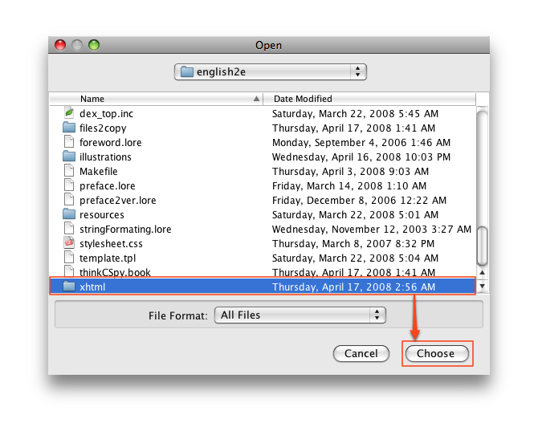
選擇好要匯入的檔案或目錄後，就可以按一下〔Choose〕直接匯入。
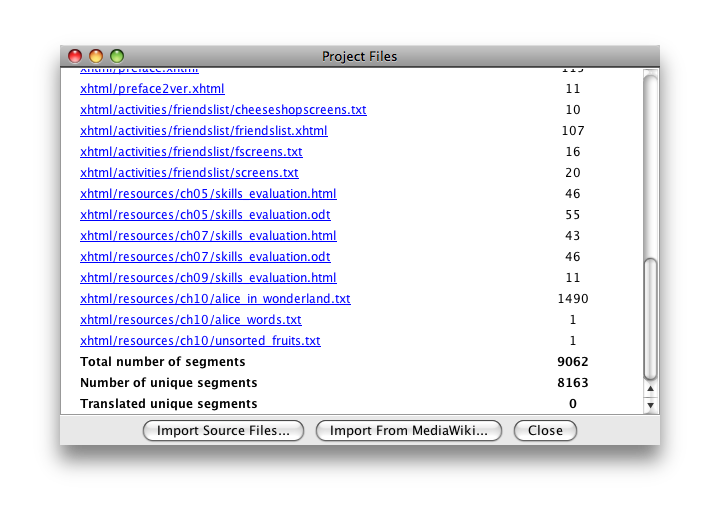
然後你就可以在「Project Files」視窗中看到這個計畫中的所有文件，並可以看到整個計畫中分成幾個段落（segments），和已譯與未譯的段落。
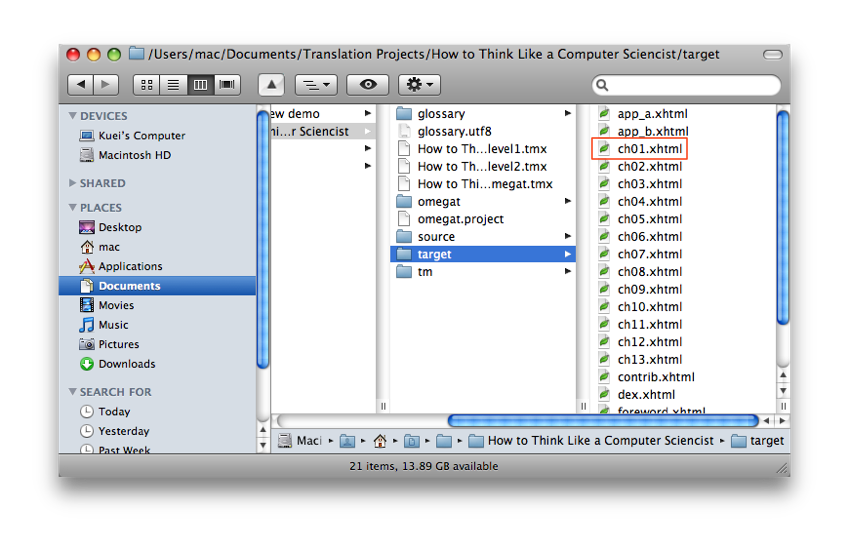
將計畫中的所有文件包入後，你可以在剛剛指定的位置看到計畫的資料夾產生，在這個資料夾中，「Glossay」是讓發譯者放入詞彙表用，而 TM 檔則可以放入「tm」資料夾，不過如果是 CAT Tools 自行產生的 TM 檔則會直接放在主資料夾中，在圖中所有以 tmx 為副檔名皆為 TM 檔，三個 TM 檔各儲存不同格式的資料。而「source」資料中則包含原文檔案，而翻譯完成後會產成的 Target 檔則在會「target」資料夾中。發譯者可以將整個資料夾包成壓縮檔後，寄送給譯者翻譯。
翻譯
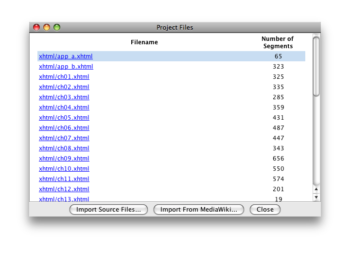
譯者收到檔案後，就可以打開該項計畫，則選擇所要翻譯的文件之一。
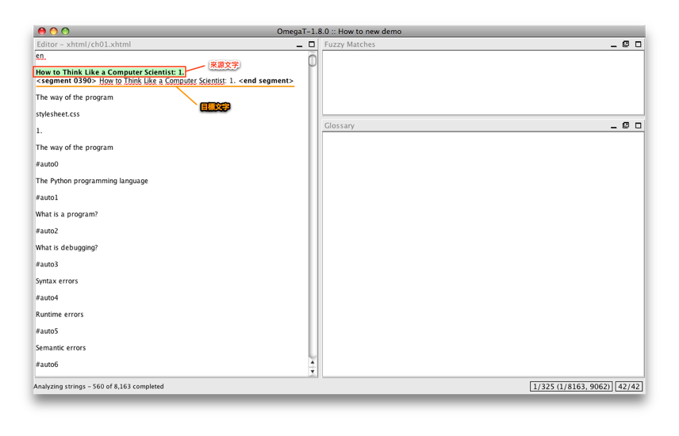
一開始 CAT Tools 會打開一個 Segment，你可以在圖中看到在 OmegaT 中來源文字為綠色底，而目標文字則包含在兩個標籤中。
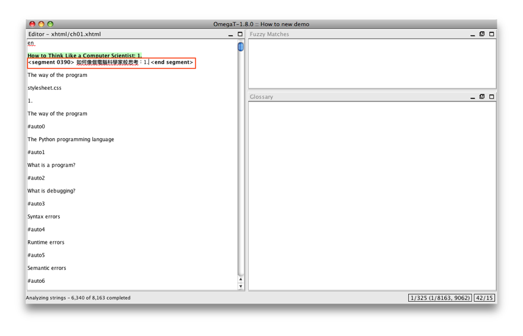
譯者只要將翻譯輸入，取代原有的目標文字後，再按一下鍵盤上的「return」（enter）鍵即可以將翻譯輸入 TM 檔中。
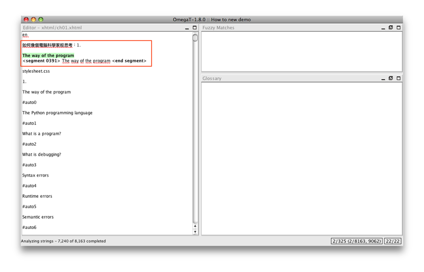
譯者按下「return」鍵，OmegaT 即會自動開啟下一個 Segment 供譯者翻譯。
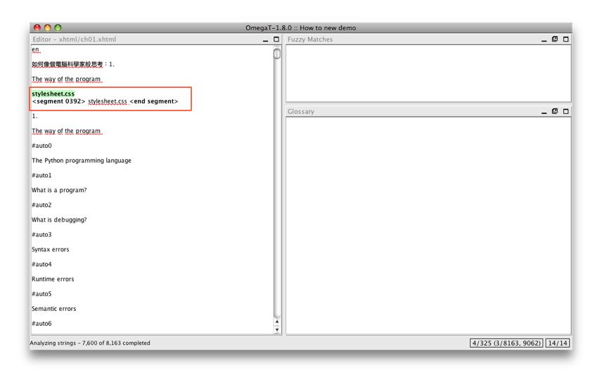
雖然 CAT Tools 會自行判斷需要翻譯的文字，除去不翻譯的部分（例如 HTML 中的標籤部分），但有時仍為判斷錯誤，因此遇到此種問題時，必須由翻譯者自行判斷是否翻譯。
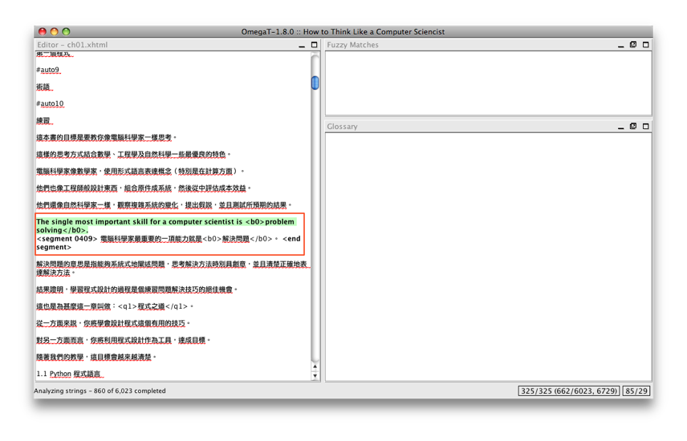
在翻譯特殊格式時，則會遇到特殊的標籤格式，此時翻譯者必須記得將這些標籤套用在翻譯中的對應之處，以保持與原文件的一致性。
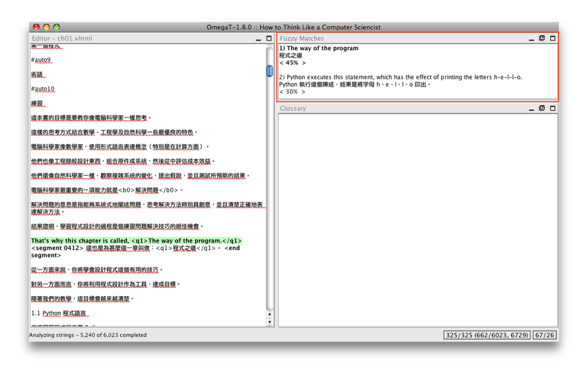
在 OmegaT 中如果 TM 檔中有可以對應的翻譯，會顯示在「Fuzzy Matches」欄位中，並顯示該譯文的符合百分比，讀者可以自行決定要重新翻譯，或是套用後再修改。如果要套用，可以按下鍵盤上的「Command+R」（Mac）或是「ctrl+R」（PC）套用符合的舊譯。如果 TM 檔提供一個以上的符合文句，則可以使用「Command/Ctrl+ 數字」指定所要套用的符合文句。
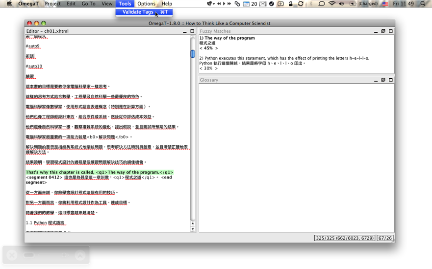
如此一句句地翻譯下去，將整份文件就翻譯完成後，譯者必須先檢查文件所有的特殊格式標籤是否全數保留，這當然不是叫譯者一句句校對，我們可以使用【Tools】中的【Validate Tags】功能讓 CAT Tools 自行檢查。
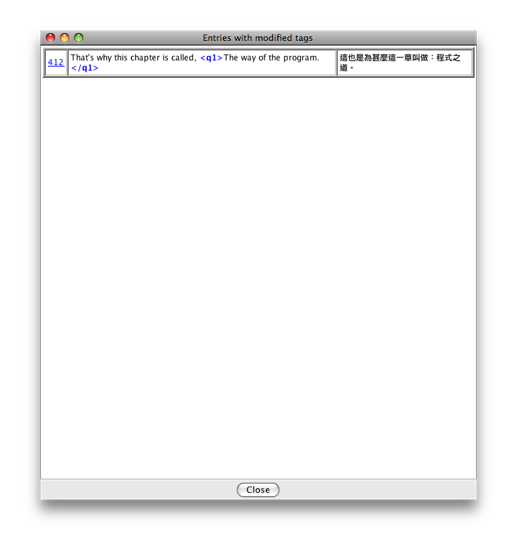
如果 CAT Tools 找到了格式不符合或是遺漏的標籤，則 CAT Tools 會顯示提示，提示中第一部分為 Segment 的編號，第二部分為原文標籤的形式，第三部分為譯文標籤形式。
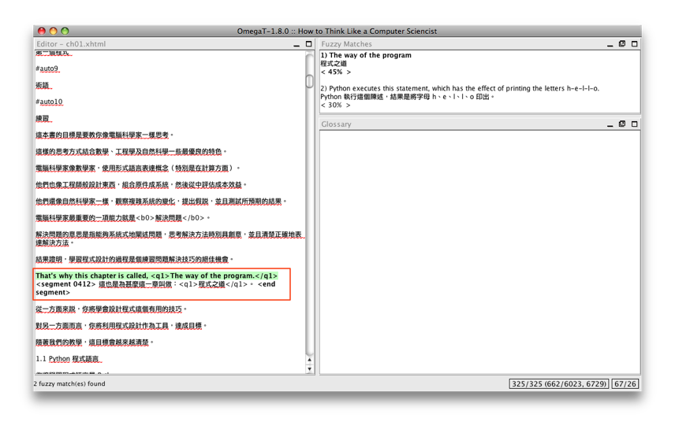
譯者只要按一下 Segment 編號即可移動到需修改的段落，修改後按一下「return」鍵儲存再檢查一次即可。
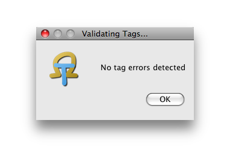
檢查結果如果完全正確，OmegaT 會提示「No tag errors detected」，這就表示特殊標籤已無任何錯誤。
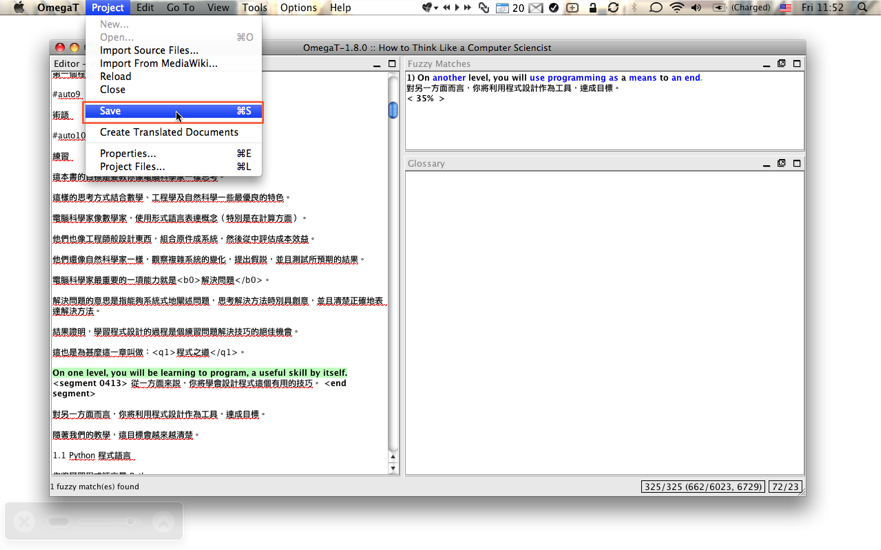
接下來可別忘了儲存你的工作成果，因為 OmegaT 只是將你的翻譯儲存到 TM 檔中，並不會幫你自動儲存文件。
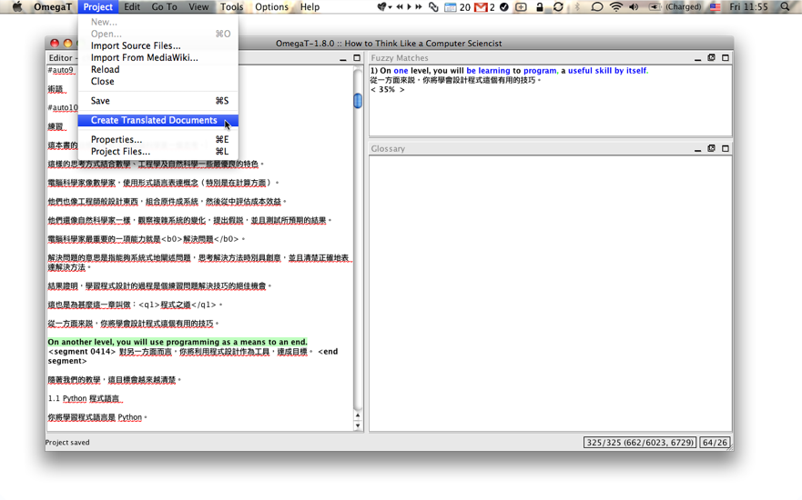
接下來必須產生 Target 檔，也就是譯者的翻譯成果檔案。只要選擇【Project】->【Create Translated Documents】就可以輕易完成這個工作。
然後就可以在「target」資料夾中看到翻譯後的文檔。
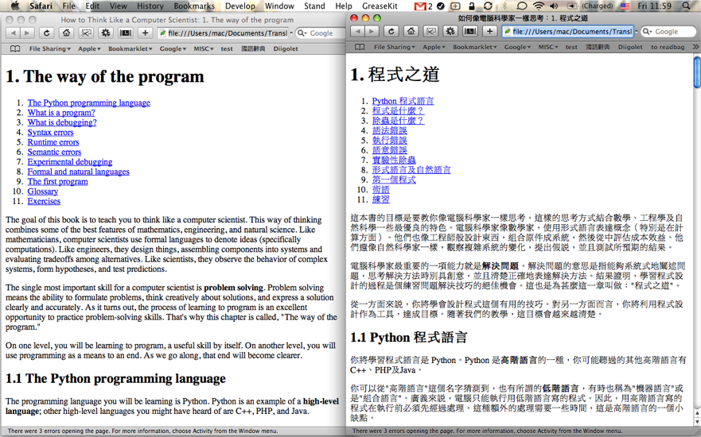
打開 Source 檔和 Target 檔比較一下，就可以發現 CAT Tools 可以幫你保留所有支援文件的特殊格式，讓譯者不需處理特殊格式的保留，僅需完成翻譯工作即可。
Note
由於目前 OmegaT 處理中文 Glossary 時，因為中文斷句問題，因此無法顯示，因此先略去不提。製作 OmegaT 可讀的 Glossary 檔非常簡單，因為基本上它就是個三欄純文字表格，只要在各欄間用 tab 作為分隔，並記得一詞一行即可，三欄的內容依序分別為「原詞」、「譯詞」和「註解（選擇性輸入）」。製作好的 Glossary 文件副檔名需為 .tab（同語系）或 .utf8（不同語系）。你也可以使用 EXCEL 或 Calc 製作，並轉存為 CSV 檔，只要記得將副名改為 .tag 或 .utf8 即可。
Review 和 QA
Review 和 QA 工作在 CAT Tools 的使用方式上，完全和翻譯相同，但不需翻譯，Review 的功能在於找出所有譯者錯譯、漏譯的部分，並修改成正確的翻譯。而 QA 則是必須檢視整份翻譯文件的流暢性和文件風格等，必要時（如和該譯者第一次合作時）可製作 QA report 評鑑該份翻譯的良好度，但這就和 CAT Tools 的操作無多大關係了。
Special


Address：No.128, Sec.2, Academia Rd., Institute of Information Science, Academia Sinica, Nangang District, Taipei City 11529, Taiwan (R.O.C).
Privacy Policy. Terms-of-use